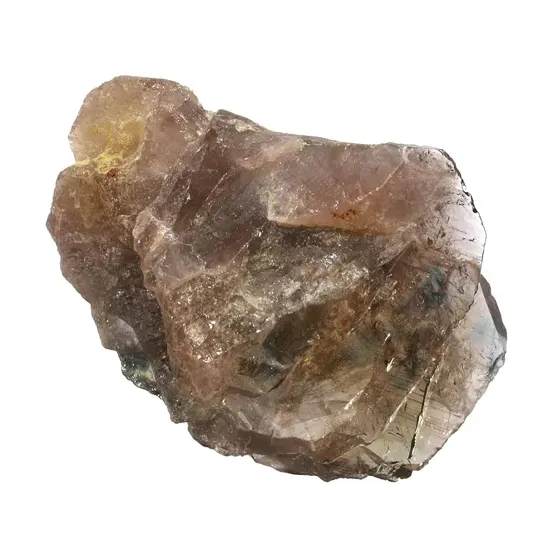

Mineral Grimoire
 Axinite
Axinite
Axinite's Journey to You
Axinite takes its name from the Greek word for "ax," a nod to the sharp wedge-shaped form its crystals naturally take. This unusual structure has made it a collector's favorite, and it also informs some of its most distinctive metaphysical properties — particularly its ability to cut through the boundary between sleeping and waking states, enabling vivid lucid dreams and astral travel. On a physical level, axinite is known for its capacity to cut through pain and reduce inflammation, particularly in the legs and feet, with an effect said to be even more potent than bloodstone.
Crystal Healing with Axinite
Axinite draws energy upward from the earth and moves it through the entire energetic system, revitalizing the body and building endurance and general well-being. For strongest effect, keep it close to the Root Chakra — even carried in a back pocket works well. Placed at the Third Eye Chakra, it sharpens practical reasoning and strengthens memory. It also expands awareness of subconscious thought patterns, particularly those that arise as distractions during meditation. Axinite can also surface experiences and wounds from past lives that are still quietly shaping present-day choices, allowing those patterns to be consciously healed. Used on both chakras simultaneously, it grounds excess energy after deep meditation and keeps the energy system stable when working with high-vibrational stones such as Barite or Moldavite.
For the Beginner
- Fosters inner harmony, cooperation, and the graceful resolution of conflict.
- Deepens and stabilizes friendships and helps smooth rocky relationships.
- Supports making aligned choices and cultivates acceptance of change, trusting that even difficult transitions move you toward your highest purpose.
- Neutralizes excess energy and clears energetic blockages — the root of its pain-relieving and healing properties.
For the Advanced Practitioner
Axinite is a powerful anchor after astral travel or any form of outer journeying, helping lock in the memory of visions and insights gained along the way. It bridges the conscious and subconscious minds, opening access to information from both past and future incarnations and enabling practitioners to overlay that wisdom in healing sessions — infusing the present energetic field with an ideal state of wellness. It also supports deep healing work by helping reverse-engineer the origins of pain and illness at their source.
Axinite's Magickal Message for You
"Wield my blade to cut through the boundaries between dreams and reality, and see that the separation between lives, worlds, and dimensions is an illusion. I will help you bring knowledge and healing back from these journeys of inner exploration that you didn't realize you had within you."
Partners Well With
Alexandrite, Beryllonite, Danburite
Did You Know?
Axinite's Mohs hardness can shift depending on which mineral is most dominant in its composition — iron, magnesium, or manganese. All three are always present, but the dominant one affects not just hardness but color, which ranges from deep clove brown to yellow-orange and even a rare violet.